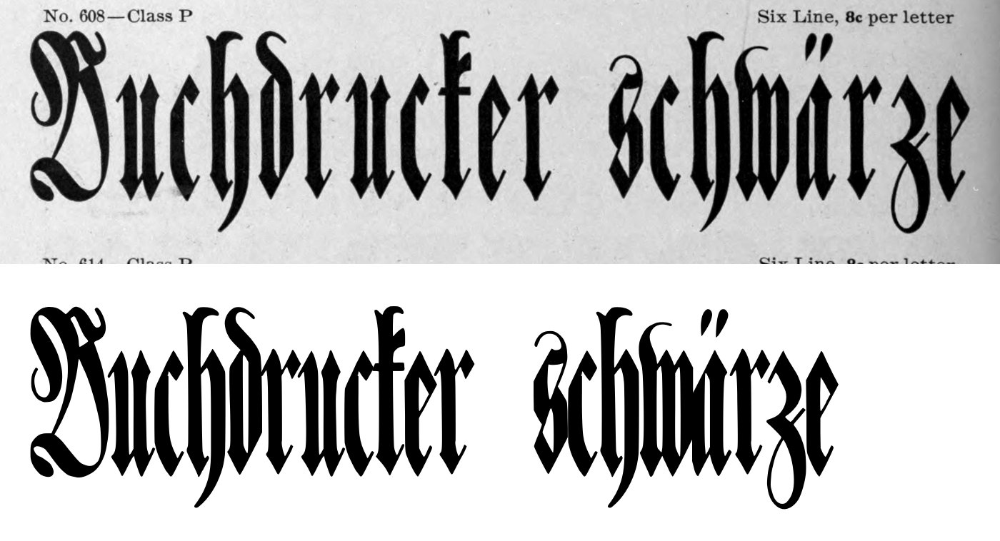
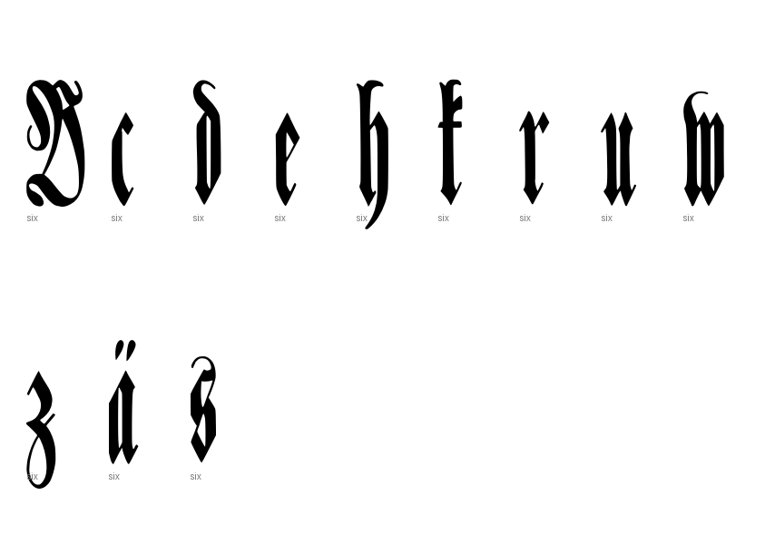
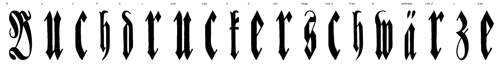

Gray letters are constructed, not traced.


0 warnings, 0 notes.
[]
{
"900:six": {
"n_caps": 1,
"cap_height_px": 400,
"cap_source": "caps",
"baseline_px": 971,
"baselines": {
"2": 971
},
"glyphs": [
"B",
"u",
"c",
"h",
"d",
"r",
"u.six",
"c.six",
"k",
"e",
"r.six",
"longs",
"c.six_2",
"h.six",
"w",
"adieresis",
"r.six_2",
"z",
"e.six"
],
"x_height_px": 296.5,
"stem_px": 10,
"scale": 1.75,
"stem_units": 17.5,
"x_height": 519
}
}
{
"archive_id": "bookoftypespecim00barnrich",
"title": "Book of type specimens. Comprising a large variety of superior copper-mixed types, rules, borders, galleys, printing presses, electric-welded chases, paper and card cutters, wood goods, book binding machinery etc., together with valuable information to the craft. Specimen book no.9",
"creator": [
"Barnhart, bros. & Spindler, firm, type founders, Chicago",
"De Young family",
"De Young, Charles, 1881-"
],
"publisher": "Chicago, Barnhart bros. & Spindler",
"date": "[1907]",
"ppi": 400,
"url": "https://archive.org/details/bookoftypespecim00barnrich",
"copyright_status": "NOT_IN_COPYRIGHT",
"contributor": "University of California Libraries",
"leaves": [
900
]
}